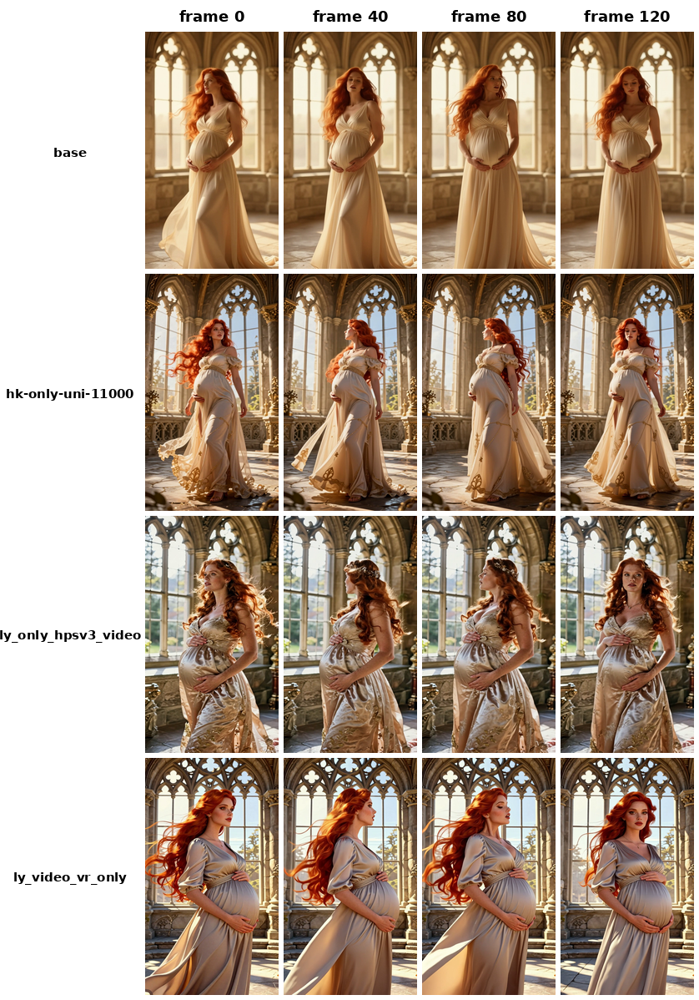
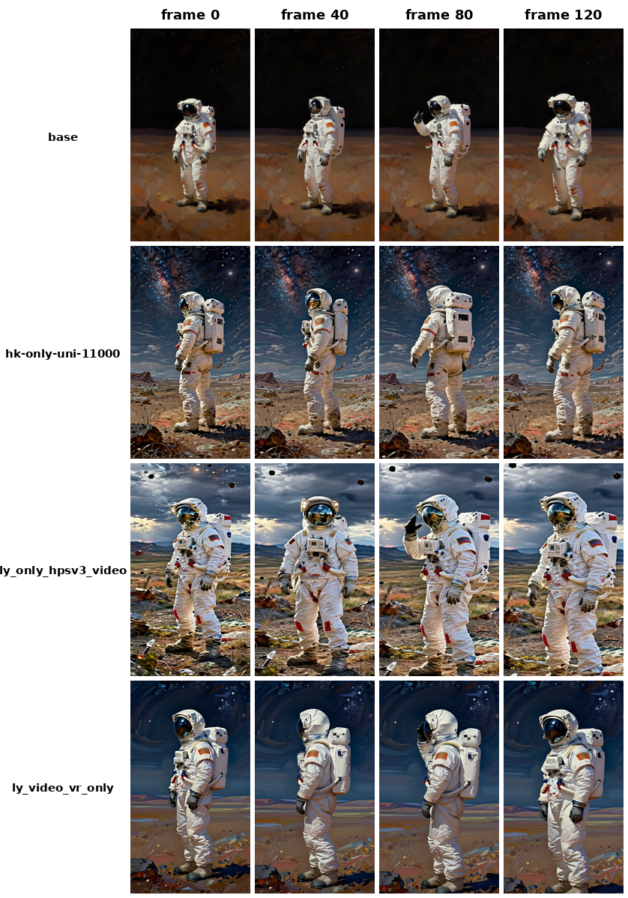
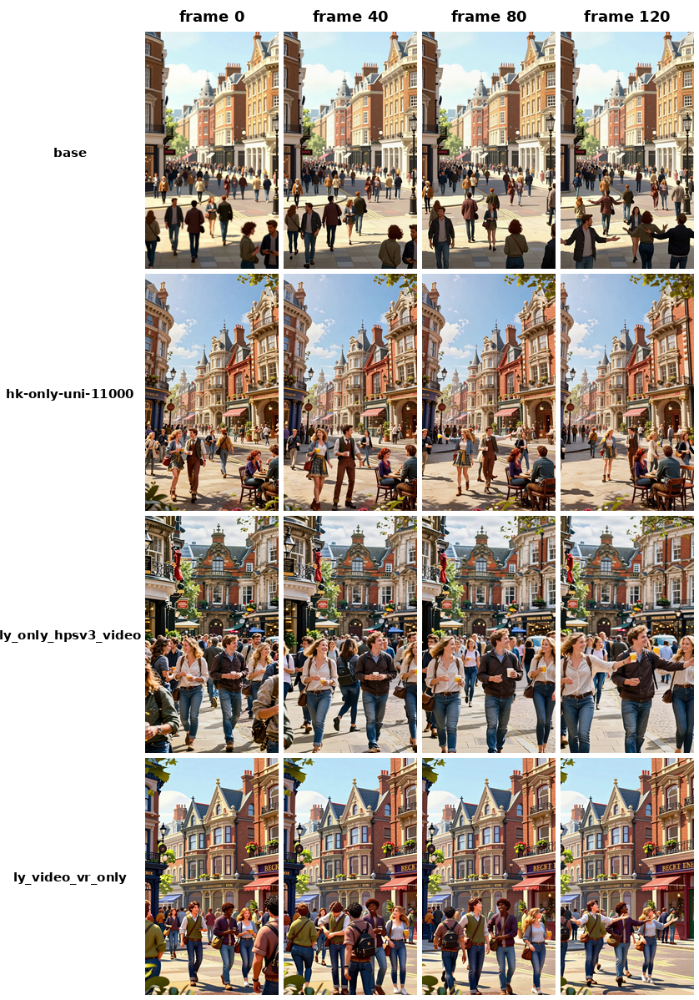
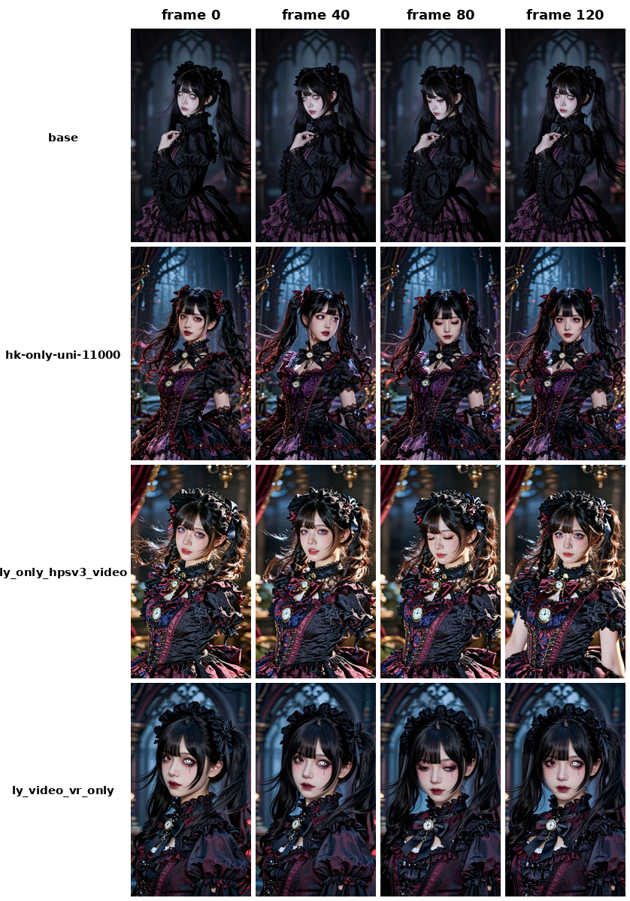
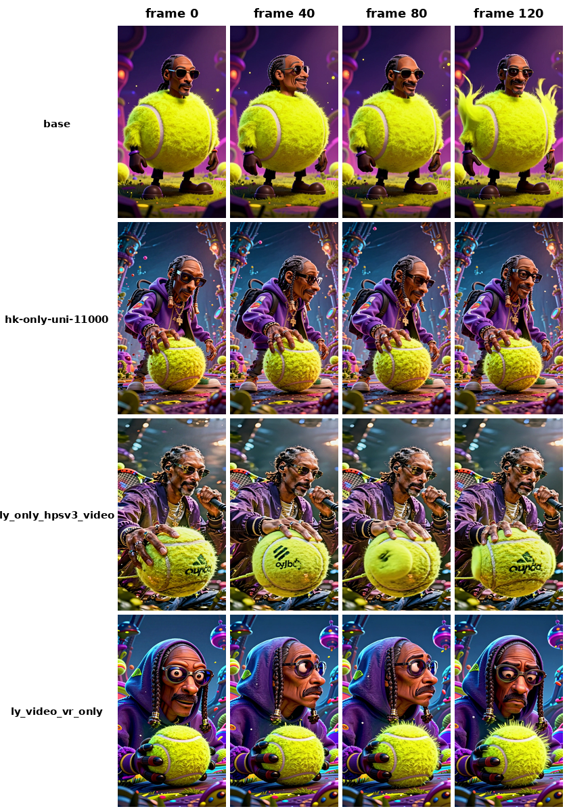
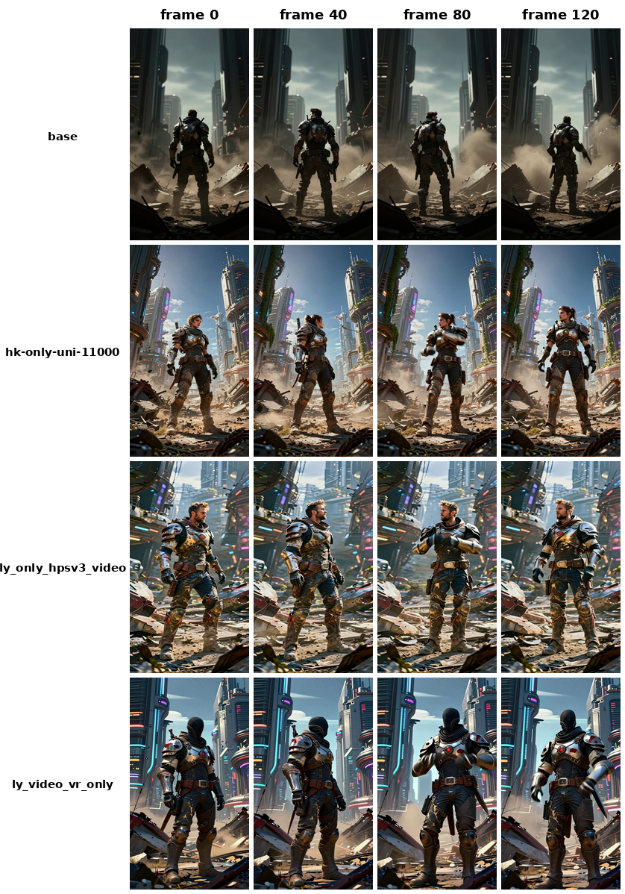

kling_formal — frame strips (0 / 40 / 80 / 120)
每张图：4 行 = base / hk-only-uni-11000 / ly_only_hpsv3_video / ly_video_vr_only；4 列 = 第 0/40/80/120 帧。
|
← 视频对比页batch33_sample_002_row0000
A pregnant woman with long red hair stands in a sunlit stone chamber with ornate gothic windows. She turns her head slowly to the left, pauses for two seconds, then turns back to face forward. Her hair sways left and right three times. Her gown shifts slightly at the waist. Her chest rises and falls twice as she breathes.

batch33_sample_002_row0002
An astronaut stands on a vast, desolate landscape while cosmic dust particles drift through the air. The astronaut turns their head slowly to the left, pauses, then turns to the right. They raise their right gloved hand to face level, touch the helmet visor once, and lower the hand back to their side. The camera performs a subtle steady zoom in toward the astronaut.

batch33_sample_009_row0003
A group of people walks forward along a city street with arms swinging at their sides. They turn their heads to the left and right, then raise their hands to shoulder level and gesture outward twice. The camera pans slowly from left to right.

batch33_sample_011_row0004
A young woman with black twin pigtails and a clock-patterned eye turns her head slightly to the left, pauses, and returns to face forward. Her gaze shifts downward briefly before lifting to look straight ahead. Her twin pigtails sway gently left and right, and the fabric ruffles on her attire flutter in a soft breeze. The camera remains static.

batch33_sample_013_row0004
A hybrid creature with a dog-like head and a body covered in yellow fuzz stands in an environment. The creature turns its head to the left, pauses for one second, then turns it to the right. The yellow fuzz on the shoulders ripples inward and outward twice. Small floating particles drift slowly upward in the background. The creature blinks its eyes once.

batch33_sample_006_row0001
A wanderer in scavenged post-apocalyptic armor stands among the ruins of a retro-futuristic city. The subject turns their head to the left, pauses, then turns to the right. They shift their weight from their right leg to their left leg and step slightly forward with their right foot. The wanderer lifts their right gloved hand to adjust the strap across their chest armor, holds the position for a moment, then retracts the hand back to their side.
